| |
|
GÖRSELLEŞTİRME
|
Görselleştirme Seviyesi. Yakınlaştırma (Zoom) ve Çalışma Alanı
3D Görünüm Yönelim Uçuş Soluklaştırma Grafik Nesne Bilgilerini Görüntüleme Önemli Noktalar Görselleştirme Seviyesi. Yakınlaştırma (Zoom) ve Çalışma Alanı ISTRAM®/ISPOL® gibi bilgisayar destekli çizim programlarındaki en önemli işlevlerden biri, görselleştirme ekranında serbestçe hareket etme ve oluşturulan projenin daha iyi bir perspektifini elde etmeyi sağlayan herhangi bir noktasına konumlanma imkanıdır. 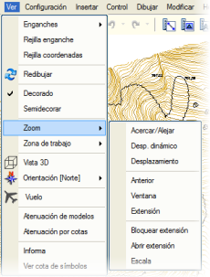ISTRAM®/ISPOL®, bu konuda Görünüm → Yakınlaştır (Zoom) menüsünde toplanmış geniş bir olanaklar yelpazesi sunar:
Bu eylem, fare imlecinin bulunduğu nokta üzerinde eylemi gerçekleştiren fare tekerleği ile doğrudan yapılır. Tekerleği ileri doğru çevirdiğinizde yakınlaşma, geriye doğru çevirdiğinizde ise uzaklaşma etkisi oluşur. <F1> ve <F2> tuşları sırasıyla aynı etkiyi yaratır.
Bu işlev menüden kullanılırsa, bir X ve Y koordinat noktasına tıklandıktan sonra çizim düzlemi yakınlaşır veya uzaklaşır. Tekrar tıklandığında eylem durur ancak istenene kadar yürütmede kalır. Buna karşılık, farenin sağ tuşu veya <Esc> tuşu ile kalıcı olarak durdurulur.
Bu eylem, fare tekerleğini basılı tutarak da doğrudan yapılır; bu, imlecin çizim üzerinde "kilitlenmesini" ve böylece kaydırılmasını sağlar.
Önceki durumda olduğu gibi, farenin ana tuşu ile yürütmede kalır ve farenin sağ tuşu veya klavyedeki <Esc> ile kalıcı olarak durdurulur.
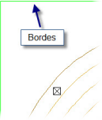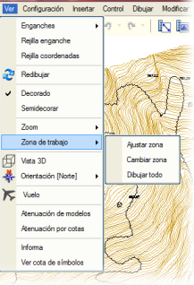Yakınlaştır (Zoom) seçeneğinden bahsedildiğinde, aralarında doğrudan bir ilişki olduğu için çalışma alanı göz ardı edilemez. ISTRAM®/ISPOL®, kullanıcı tarafından herhangi bir zamanda değiştirilebilen sabit kenarlarla çalışır. Bir projenin çalışma alanını tanımlayan bu sabit kenarlardır. Çalışma alanının yapılandırma seçenekleri şunlardır:
3D Görünüm Görünüm → 3D Görünüm seçildiğinde veya standart araç çubuğundaki  butonuna basıldığında açılan ortam, çalışma alanını dikey menüde açılan butonlar veya fare aracılığıyla üç boyutlu bir perspektiften görüntülemeyi sağlar. butonuna basıldığında açılan ortam, çalışma alanını dikey menüde açılan butonlar veya fare aracılığıyla üç boyutlu bir perspektiften görüntülemeyi sağlar.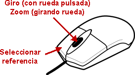Referansı seçmek için 3D görünümde herhangi bir grafik nesneye tıklamak yeterlidir; program o zaman onun (X,Y,Z) koordinatlarını yeni referans merkezi olarak alır. Seçilen nesne daha kalın ve sarı renkte temsil edilir ve ayrıca mesaj alanında nesne tipi, model vb. gösterilir. Fare tekerleğini çevirerek kamerayı referans noktasına göre yakınlaştırmak veya uzaklaştırmak mümkünken, tekerleği basılı tutarak fareyi hareket ettirirseniz, kamerayı referans noktasına göre döndürmek mümkün olur. İmleci herhangi bir nesnenin üzerine getirdiğinizde, koordinat göstergesinde gerçek (X,Y,Z) koordinatları gösterilir. Eksenlerin geçici çiziminden bir düğüm noktası tıklayarak 3D görünümlerin referans noktası seçilebilir. Menüde açılan seçenekler, haritayı kullanıcının isteğine göre konumlandırmak için çok geniş bir olanaklar yelpazesi de sunar: 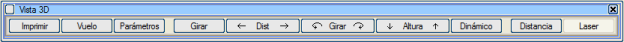
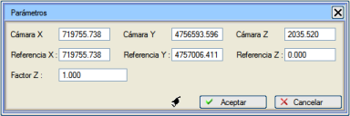
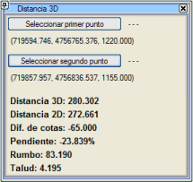
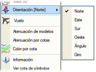Bu bölümden kullanıcı, kuzey yönünü belirterek çizim ekranının dönüşünü belirtebilir. Varsayılan olarak, pafta kuzeyinin EDM'nin kuzeyine doğru olduğu belirlenmiştir, ancak kuzey yönünün EDM'nin doğusuna, güneyine veya batısına doğru olduğunu belirlemek de mümkündür. Bu açıyı belirli bir değerle bildirmek ve hatta grafiksel olarak bir dönüş belirtmek de mümkündür. Uçuş 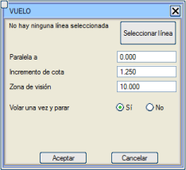Görünüm → Uçuş seçeneği, haritanın üç boyutlu tel kafes perspektifinde bir poliline üzerinde bir gezinme yapmayı sağlar. Seçenek şunları ister:
Soluklaştırma Soluklaştırma işlevi, ilgilenilen harita bölgesinin rengini vurgulamaktır. Bunu elde etmek için iki seçenek vardır:
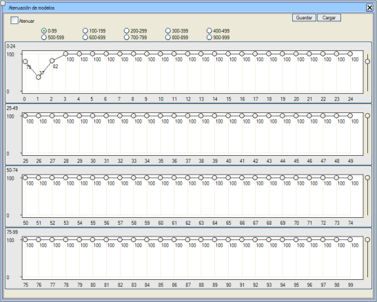 Modellerin soluklaştırılması, modellerin kontrolü menüsünden de yapılandırılabilir.
Grafik Nesne Bilgilerini Görüntüleme 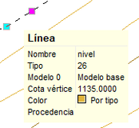Fare imlecini herhangi bir çizim nesnesinin üzerinde bir anlığına bırakarak, fare tekrar hareket edene kadar o nesneyle ilgili bilgiler gösterilir ve eğer bir çizgi ise, aynı kota sahip olan diğer çizgiler de yeşil renkte vurgulanır. Bu işlev, standart araç çubuğundaki  simgesine basılırsa devre dışı bırakılabilir. simgesine basılırsa devre dışı bırakılabilir.Öte yandan, Görünüm → Bilgi seçeneği (veya klavyeden i komutu girilerek), bu verileri komut alanında ve bilgisi geçici olarak gösterilmek istenen grafik nesneye tıklandıkça göstermeyi sağlar. Ayrıca, Görünüm → Sembol Kotunu Göster seçeneği etkinleştirilerek çizimde mevcut olan sembollerin kotunu ekranda sabit olarak göstermek de mümkündür. 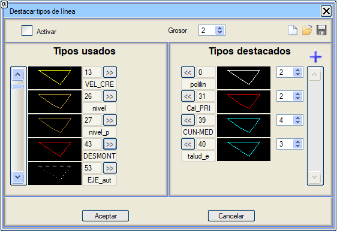Görünüm → Çizgileri Vurgula seçeneği, seçenek seçildikten sonra görünen iletişim kutusu aracılığıyla kullanıcının karar verdiği çizgi tiplerini, belirtilen kalınlıkla göstermeyi sağlar. Bu araç, profilleri düzenlerken Gerçek Kesitin çizgilerini vurgulamak için kullanılabilir. Vurgulanacak çizgilerin gösterilmesi için, Etkinleştir seçeneğinin işaretli olması gerekir. O anda haritada kullanımda olmayan bir tipi vurgulanan tipler listesine ekleme imkanımız olacak. Bunun için  kutucuğuna tıklayarak vurgulanacak çizgi tipini seçebiliriz. kutucuğuna tıklayarak vurgulanacak çizgi tipini seçebiliriz.Çizgilerimiz için genel bir kalınlık seçmenin yanı sıra, her biri için özel bir kalınlık da seçebiliriz. Sağ üst kısımdaki üç simge aracılığıyla, bir .dtl dosyası kaydederek ve yükleyerek vurgulanan çizgi tiplerinin yapılandırması yönetilebilir.
Önemli Noktalar Daha sonra kolayca ziyaret edebilmek için harita üzerinde önemli noktaları kaydetme imkanı vardır. İçerik menüsünde, mevcut görünümü önemli bir nokta olarak kaydetme seçeneği verilir; bu seçeneğe farenin sağ tuşuna tıkladığımızda da erişilebilir:  Görünüm menüsünden, kaydedilen farklı görünümleri görebileceğiniz, silebileceğiniz veya adlarını değiştirebileceğiniz ekrana erişilebilir.  Klavye kısayolları olarak oklar kullanılır: - Shift + Yukarı: mevcut görünümü önemli bir nokta olarak kaydeder. - Shift + Aşağı: mevcut görünümü önemli noktalar listesinden siler. - Shift + Sağ: bir sonraki önemli noktaya ilerler. - Shift + Sol: önceki önemli noktaya geri döner. Istram'dan çıkıldığında, oturumun önemli noktalarını içeren bir ISPOL.pdi dosyası çalışma klasöründe oluşturulur; bu dosya, önceki oturumun noktalarını kurtarmak için programa girildiğinde yüklenmeye çalışılır. Bu dosya, projenin .isa dosyasına dahil edilecektir. |